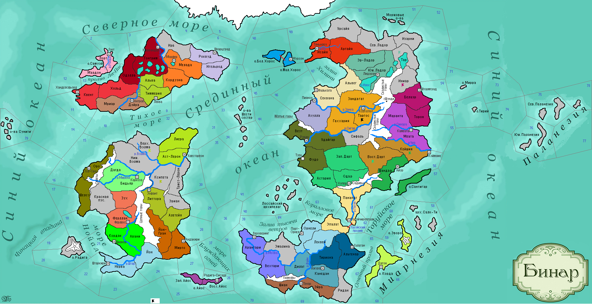

<==
| 1 |
| 2 |
| 3 |
| 4 |
| 5 |
| 6 |
| 7 |
| 8 |
| 9 |
==>

4-й ход истории мира Бинар (1115 г.)
· Занкийская война завершилась в 1115 г. Государство Муад’оги становится вассалом Дюрандаля. Провинция Гаххария передается в состав Ксеп Ха Хоца. Побежденная страна принимает религию культ Мортис.
· Войска Атуана проигрывают битву в провинции Канедан.
· Ульнар объявляет войну Андору, вторгнувшись в провинцию Кейшия. Попытка штурма столицы Андора провалилась..
· Расположения войск Астерлии в Верх.Вэлме подверглись атаке варваров Ниж.Вэлмы!
· Князь Синарала Эммус Вещий, умирая завещал детям посвятить свою жизнь распространению учений Святого Каратана. Дидар Интересный, принявший трон после смерти отца, объявляет о принятии страной религии Каратанское учение.
· В Ладориане умирает бездетный князь Хенстейн I. В стране после прихода к власти Элдена I сменилась правящая династия.
· Кауш I – новый правитель Феллерда. После вступления на трон юный князь заявил сестрам, что «продаст их в жены в целях пополнения казны». Так бэрны, приняли культурную традицию «Колым».
· Войска Торуйского княжества, понеся тяжелые потери, распрощалось с надеждой захвата островов Лоссайского архипелага.
· Реа Коварный наследует трон Орнели.
· Темпестский князь Римуру I освобождает провинцию Дилат.
· Наследование Хосом II трона Загорры спровоцировало в стране династический кризис. Восставшие загоррцы захватывают столицу страны. Властям удалось подавить мятеж.
· Князь Йонтари Евнакис I отличался почитанием священных уз брака, заложив в народе йонтов традицию семейственности.
· После потери знаменитого ювелирного промысла г.Тяньнлоу, хилинги не утратили навыков, но стали работать по домам, поддерживая традиции рукоделия.
· В Дагоне освоили производство лекарственных препаратов. Особенной популярностью пользовались сушеный корень мандрагоры и капли на основе китовой спермы.
· Не смотря на проведенную разведку, войска Моэдаса вновь оказываются разгромленными в Канедане.
· Излюбленным занятием дартийцев с недавних пор стало сложение стихов о славных победах её правителей. Новый повод дала война с Андором, в ходе которой оккупируется провинция Вост.Дарт.
· Таргос пал под ударом варваров Сифаля!
· Варвары покинули Бидьяр, показав испуганным селетийцам окрашенные охрой зады своих боевых коней.